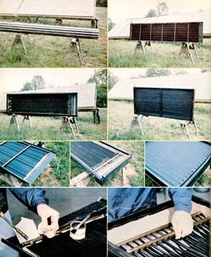

Staff Photo
Top Left: Mother's in-line collector. Top right: The BTU Bucket without glazing. Center left: A three-pass version of a SolaRoll unit. Center right: Suntree's kit collector has 17 tubes. Bottom left: Suntree's collector box is now made of aluminum. Bottom middle: The BTU Bucket tubes must be joined to its headers with solder. Bottom right: SolaRoll's 36 fluid-carrying passages are seaded to the headers by pressing the rubber tubes - with Teflon jam sleeves inside - into preformed openings.